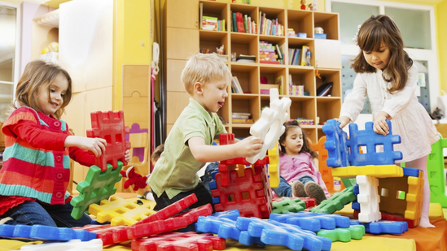

"Empowering the young child for their greater purpose."
Pat's Educare Centre has been caring for and teaching young children since 2011. We are a registered non-profit organisation (NPO 150-845) for children aged 1 to 5, with a Montessori-integrated programme, small classes and a home-like feeling that parents trust. Everything we do starts with one belief: every child is unique and deserves the time, attention and encouragement to grow at their own pace.
Meet Pat
Pat's Educare Centre was started in 2011 with a simple purpose: to give young children a safe, caring place to begin their learning journey. The centre carries her name, and her values run through every classroom, from the way children are greeted at the gate to the way parents are listened to.
Pat believes the early years shape everything that follows. A child who feels safe, valued and curious will carry that confidence into school and into life. That is why the centre is built around patience, encouragement and strong partnerships with families rather than pressure or rote learning.
More than a decade on, the centre serves families at two campuses, in Mitchells Plain and in Victoria Park, Somerset West, and the same promise applies at both: your child will be known, cared for and encouraged.
Our Mission
Your little one deserves the best. Our mission is to provide a safe, caring and stimulating environment where every child can learn, play and grow with confidence.
We believe every child is unique and deserves the opportunity to develop at their own pace. Through fun activities, creative learning and positive encouragement, we build strong foundations for each child's future.
We work closely with parents and families so that every child feels supported, valued and happy while in our care, because a child thrives when home and school pull in the same loving direction.

How We Teach
Our programme combines the National Curriculum Framework (NCF) with the Montessori approach: child-centred, hands-on, self-directed learning in a carefully prepared environment. Children choose purposeful activities, work at their own pace and build concentration, independence and a genuine love of learning.
Healthy learning is about more than the classroom. Two nutritional meals a day, big creative playgrounds, outdoor play and plenty of positive interaction help children develop physically, emotionally, socially and academically. Small classes mean educators know each child well and can give the individual attention every little one needs.
Children can also take part in on-site swimming, martial arts, speech and drama and Actionball, and each year includes an educational excursion.
Come and see it for yourself
The best way to know if Pat's is right for your child is to talk to us. Get in touch, or create a parent account to stay connected.
Contact us Create an account